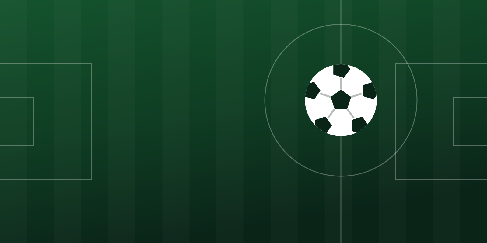
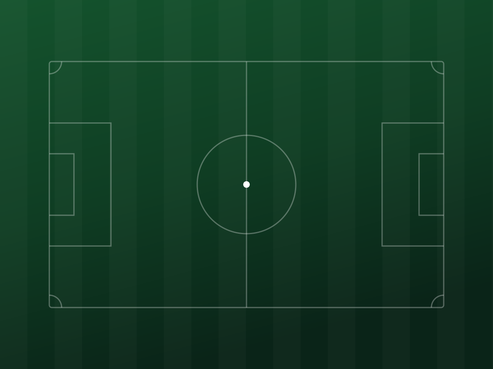

Schiedsrichter · FV Löbtauer Kickers
Ohne uns geht
Ohne uns geht
kein Spiel
Neunzig Minuten, zweiundzwanzig Meinungen, eine Entscheidung.

Ab 12 Jahren
Steh mitten im Spiel, statt danebenzustehen
Sieben Abende Lehrgang, danach pfeifst du dein erstes Spiel – mit einem erfahrenen Schiedsrichter als Paten an der Seite. Rund 25 € je Spiel, Fahrtkosten dazu, die Kleidung übernimmt der Verein. Und mit dem Ausweis kommst du zu jedem Spiel im DFB-Gebiet frei rein.
So läuft der Einstieg
Ohne Anmeldung
Hättest du richtig entschieden?
Eine echte Frage aus unserem Regelquiz – dieselben, mit denen sich unsere Schiedsrichter jede Woche vorbereiten.